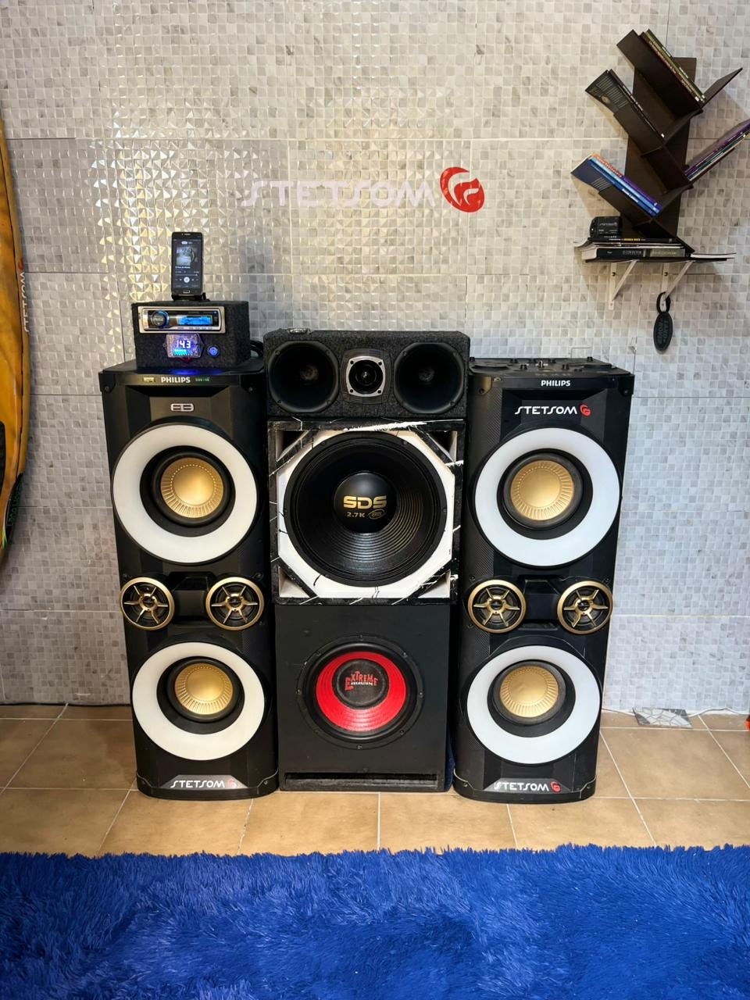
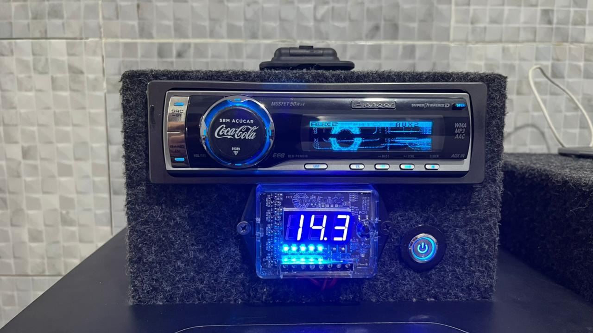
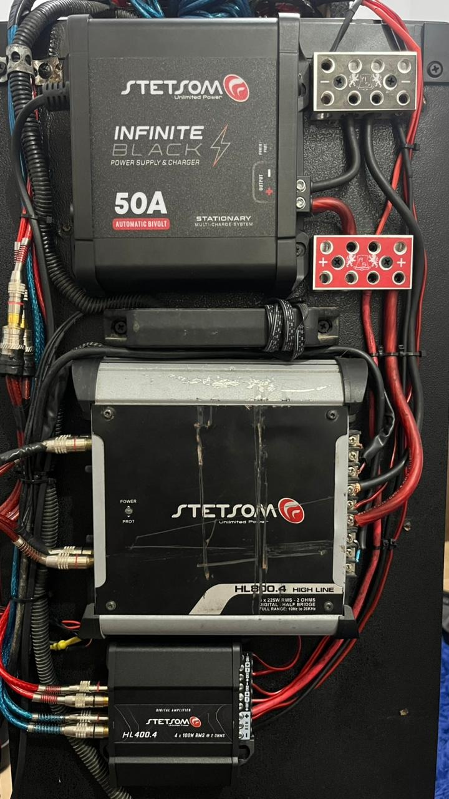

🔈
Som interno
Melhoria de alto-falantes, players, módulos e regulagem para um áudio limpo no dia a dia.
Projetos de som automotivo feitos com capricho, organização e acabamento de respeito. Do som interno ao porta-malas personalizado, cada detalhe recebe atenção.
Uma vitrine direta do que a GEJOR SOUND oferece para quem quer melhorar o som do carro com segurança, estética e desempenho.
Melhoria de alto-falantes, players, módulos e regulagem para um áudio limpo no dia a dia.
Projetos para grave, médio e agudo com visual bonito, montagem organizada e presença.
Passagem de cabos, alimentação, proteção e ligação pensada para preservar o veículo.
Ajuste fino para deixar o som equilibrado, forte e agradável, evitando distorções.
Instalação e acabamento de acessórios automotivos para valorizar ainda mais o projeto.
Projetos, registros e bastidores também presentes no Instagram e no canal GEJOR Vlogs.
Projetos reais da GEJOR SOUND, com som, carros, acabamento, instalação e personalidade.



Fotos dos carros, projetos e registros que mostram a essência da GEJOR SOUND.
A GEJOR SOUND nasceu da paixão por som automotivo bem feito. O objetivo é entregar projetos bonitos, funcionais e com aquele cuidado de quem entende que carro também é identidade.
O atendimento é direto, com conversa clara sobre o que o cliente deseja, o que o veículo permite e qual solução combina melhor com o orçamento.
Acompanhe vídeos, bastidores, projetos, carros e conteúdos da GEJOR SOUND diretamente no canal.
Conte qual carro você tem e que tipo de som ou acessório deseja instalar. A GEJOR SOUND retorna com uma ideia de projeto e orçamento.